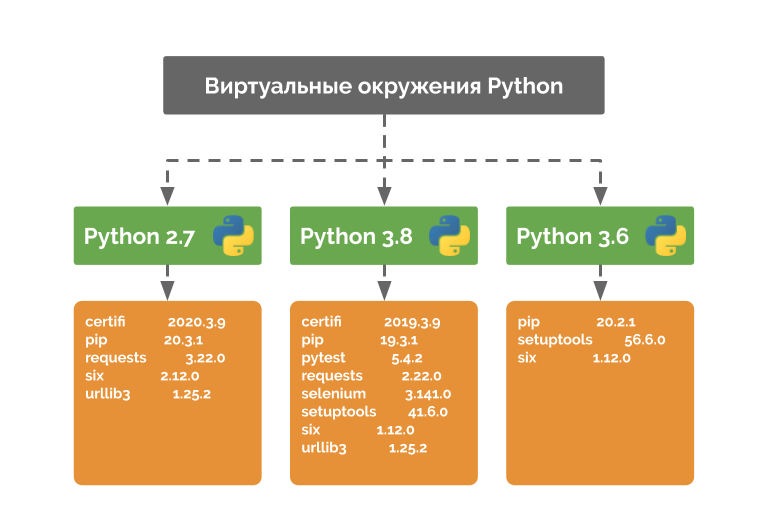

Виртуальные окружения для проектов Python
Я как и вы всегда раньше разрабатывал проекты без виртуальных окружений. Мол, зачем они нужны, и без них хорошо живётся.
Как оказалось это не просто удобный инструмент, а крайне полезная утилита, которая может спасти жизнь вашему ПК, сберечь ваше время и нервы.
Виртуальное окружение в Python — это способ изолировать зависимости (пакеты) для определённого проекта.
Представим следующий сценарий, где у вас есть два проекта: проект А и проект Б, которые оба имеют зависимость от одной и той же библиотеки – проект В. Проблема становится явной, когда мы начинаем запрашивать разные версии проекта В. Может быть так, что проект А запрашивает версию 1.0.0, в то время как проект Б запрашивает более новую версию 2.0.0, к примеру.
Это большая проблема Python, поскольку он не может различать версии в каталоге «site-packages». Так что обе версии 1.0.0 и 2.0.0 будут находиться с тем же именем в одном каталоге.
Да у меня и так всё работает, скажете вы. Вот вам наглядный пример - мои грабли.
Я достаточно много изучаю, но обновляю систему крайне редко. Моя система - Archlinux. А это значит, что некоторые python пакеты без виртуального окружения приходилось собирать из исходников и устанавливать вручную. Множество программ, использующих в своей работе те или иные пакеты python-а также оказали своё влияние. В результате спустя долгое время при очередном обновлении некоторые списки пакетов наложились друг на дружку, включая установленные pip-ом. После чего перестали функционировать вообще.
Данная неполадка обнаружилась совершенно случайно, когда в срочном порядке понадобилось написать небольшую утилиту для обработки данных.
Какие пакеты неисправны - известно, но решить проблему на сегодня пока так и не удалось.
Мне почему-то кажется, что решить эту проблему можно только полным сносом системы, потому что перепробывал я всё что только можно и нельзя. А обошёл я далеко не 10 форумов и перепробывал немалое количество вариантов решений проблемы.
Чтобы избежать подобных инцидентов мы научимся создавать виртуальные окружения, управлять ими, установливать в них необходимые пакеты и зависимости для будущей работы, а также очищать.
Работу с виртуальными окружениями рекомендуется выполнять только в SHELL - BASH, иначе команды могут не работать или выполняться некорректно.
Для работы с виртуальным окружением заранее создайте отдельную директорию, в которой вы и будете выполнять все рекомендации ниже!
Например. У вас пользователь в системе - «User», и вы находитесь в следующей папке: «C:\Users\User\». Создайте папку проекта и перейдите в неё.
> mkdir project > cd project
И уже в ней будете следовать всем необходимым рекомендациям, создавать нужные файлы и папки.
Иначе вы можете столкнуться с тем, что при следующем запуске вашей ОС - у вас вместо вашей командной строки или терминала, при их запуске будет принудительно открываться ваше виртуальное окружение. Из-за чего слетят практически все программы и запуск ОС как таковой. Не зная причин и следствий вам скорее всего исправляя ситуацию придётся полностью переустанавливать систему.
Поэтому работая с виртуальным окружением всегда создавайте для ваших проектов и окружений отдельные конкретные директории. Не используйте окружение в папке пользователя по умолчанию! Никогда! Это правило №1.
Для начала убедитесь, что у вас установлены все необходимые пакеты и зависимости:
Debian: $ sudo apt install python3-virtualenv python3-venv virtualenv python3-virtualenvwrapper python3-distlib python3-filelock python3-platformdirs python3-stevedore Archlinux: $ sudo pacman -S python-distlib python-filelock python-platformdirs python-stevedore python-virtualenv python-virtualenvwrapper Python PIP: $ python -m pip install --upgrade pip setuptools distlib filelock platformdirs stevedore virtualenv virtualenvwrapper --upgrade Windows PIP / PIP: $ pip install setuptools virtualenv virtualenvwrapper-win --upgrade
По умолчанию путь к главному файлу настроек виртуального окружения в Lunux системах изменили и каким-то образом закрыли к нему доступ. Поэтому необходио ещё создать ссылку на этот файл вручную «virtualenvwrapper». Для этого выполним примерно следующую команду. Возможно вам придётся ещё поискать этот файл поусле установки соответствующего пакета.
$ sudo ln -s /usr/share/virtualenvwrapper/virtualenvwrapper.sh /usr/local/sbin/virtualenvwrapper.sh
Virtualenvwrapper хранит все окружения в одном месте. Это место определяется через переменную WORKON_HOME. В Linux и по умолчанию равно директории: /home/пользователь/.virtualenvs. Если вы хотите изменить это расположение - выполните команду экспорта с нужным путем.
Все виртуальные среды, которые будут созданы, по умолчанию будут располагаться по пути "C:\Users\%USERNAME%\Envs". Если вам нужно изменить расположение, то создайте переменную WORKON_HOME с нужной директорией:
Важный момент, в случае с Windows, команды virtualenvwrapper не будут выполняться Powershell. Команды работают только через CMD.
Некоторые нюансы Linux актуальны и для Windows. Поэтому обязательно прочитайте!
Для того, чтобы настроить virtualenvwrapper в Linux сначала необходимо решить - где будет расположена папка со всеми окружениями. Например, в домашнем каталоге - ~/python-environments/.
Затем исправте папку PROJECT_HOME и WORKON_HOME с виртуальными окружениями в следующем коде и добавьте его в конец файла ~/.bashrc. Точку использовать не обязательно. Это только для того, чтобы вы случайно в будущем не удалили этот файл. Если будете использовать «Git» для вашего проекта просто укажите этот файл и директорию с виртуальным окружением в файле «.gitignore» пашего «GIT-Проекта».
Debian/Archlinux:
export WORKON_HOME=$HOME/python-environments/.virtualenvs export PROJECT_HOME=$HOME/python-environments export VIRTUALENVWRAPPER_PYTHON=/usr/bin/python export VIRTUALENVWRAPPER_VIRTUALENV=/usr/bin/virtualenv # export VIRTUALENVWRAPPER_VIRTUALENV_ARGS='--no-site-packages' export PIP_VIRTUALENV_BASE=$WORKON_HOME export PIP_RESPECT_VIRTUALENV=true source /usr/local/sbin/virtualenvwrapper.sh # Раньше была следующая строка, но файл переместили и закрыли доступ. Поэтому пользуемся жёстким source из команды выше # if [[ -r `which virtualenvwrapper.sh` ]]; then source `which virtualenvwrapper.sh`; fi
Обратите внимание на то, что директория «python-environments» - это и есть папка вашего проекта, в которой вы и будете работать. А папка «.virtualenvs» - директория, где внутри папки с вашим проектом будут хранится виртуальные окружения и все библиотеки.
При этом использовать точку в пути директории с виртуальным окружение вовсе не обязательно. Она нужна только для того, чтобы скрыть эту директорию от вас же самих, чтобы вы случайно её не удалили.
Обратите внимание, что строку с аргументом VIRTUALENVWRAPPER_VIRTUALENV_ARGS я пометил - как неактивную. В ОС Archlinux данный аргумент не работает.
В Debian подобных системах —no-site-packages - запретит использование одноименного системного site-packages (для полной изоляции вашего окружения от системы). Например, у вас в системе установлена Django, если вы будете использовать эту опцию, то в созданном окружении Django не будет доступна. Вы также можете, при создании окружения указать этот параметр вручную:
$ mkvirtualenv myenvironment --no-site-packages
Учтите также, что в переменной < VIRTUALENVWRAPPER_PYTHON > указан интерпретатор по умолчанию, который при создании окружения можно изменить.
Я указал его в конце команды не просто так. Данная команда чаще всего первый аргумент считает за наименование окружения. Чтобы избежать этой проблемы - просто указывайте все необходимые параметры и ключи в конце команды.
Создайте каталог проектов вручную:
$ mkdir -p ~/python-environments/ # или $ mkdir -p $WORKON_HOME
Команды одинаково работают как в Linux, так и в Windows.
Переходим в каталог с окружениями и создаем новое:
$ cd $PROJECT_HOME $ mkvirtualenv project_name
Созданное окружение автоматически авктивируется и можно устанавливать в него все необходимые пакеты и зависимости:
$ pip list $ pip install package-name # Или так $ pip install package-name --upgrade
Выйдем из созданной среды:
$ deactivate
Активация окружения:
$ workon project_name
Если нужно использовать другую версию Python:
mkvirtualenv -p python2.7 project_name
Справка:
mkvirtualenv -h
Для очистики одного из окружений ото всех установленных пакетов PIP, сначала деактивируйте его, затем воспользуйтесь следующими командами:
$ deactivate $ mkvirtualenv project_name --clear
Для удаления:
$ deactivate $ rmvirtualenv project_name
Если вам больше не требуются виртуальные окружения и вы хотите от них отказаться - сначала деактивируйте виртаульное окружение, затем просто удалите папку со всеми виртуальными окружениями и следующий код из конца файла ~/.bashrc:
$ deactivate $ sudo rm -rf $PROJECT_HOME # Код для удаления: export WORKON_HOME=$HOME/python-environments/.virtualenvs export PROJECT_HOME=$HOME/python-environments export VIRTUALENVWRAPPER_PYTHON=/usr/bin/python export VIRTUALENVWRAPPER_VIRTUALENV=/usr/bin/virtualenv # export VIRTUALENVWRAPPER_VIRTUALENV_ARGS='--no-site-packages' export PIP_VIRTUALENV_BASE=$WORKON_HOME export PIP_RESPECT_VIRTUALENV=true if [[ -r `which virtualenvwrapper.sh` ]]; then source `which virtualenvwrapper.sh`; fi
Или так:
$ sudo rm -rf $PROJECT_HOME $ sed -E -i "/export WORKON_HOME/d" ~/.bashrc $ sed -E -i "/export PROJECT_HOME/d" ~/.bashrc $ sed -E -i "/export VIRTUALENVWRAPPER_PYTHON/d" ~/.bashrc $ sed -E -i "/export VIRTUALENVWRAPPER_VIRTUALENV/d" ~/.bashrc $ sed -E -i "/\# export VIRTUALENVWRAPPER_VIRTUALENV_ARGS/d" ~/.bashrc $ sed -E -i "/export PIP_VIRTUALENV_BASE/d" ~/.bashrc $ sed -E -i "/export PIP_RESPECT_VIRTUALENV/d" ~/.bashrc $ sed -E -i "/which virtualenvwrapper.sh/d" ~/.bashrc
Создание новой виртуальной среды внутри каталога:
$ bash $ python -m venv env $ source ./env/bin/activate (env) $ deactivate
В моей системе используется SHELL - Fish. Поэтому мне придётся переключаться в Bash. Чтобы мне не прописывать указанный код в файл < ~/.bashrc > и удалить только одну единственную папку со всеми настройками и окружениями - я буду использовать локальный файл < ./.bashrc > с аналогичным содержимым в отведенной папке для тестов.
# Создаю папку для теста, захожу в неё и вставляю код для виртуальных окружений. $ mkdir -p ~/project-test/.virtualenvs/ && cd ~/project-test/ $ nano ~/project-test/.bashrc export WORKON_HOME=$HOME/project-test/.virtualenvs export PROJECT_HOME=$HOME/project-test export VIRTUALENVWRAPPER_PYTHON=/usr/bin/python export VIRTUALENVWRAPPER_VIRTUALENV=/usr/bin/virtualenv # export VIRTUALENVWRAPPER_VIRTUALENV_ARGS='--no-site-packages' export PIP_VIRTUALENV_BASE=$WORKON_HOME export PIP_RESPECT_VIRTUALENV=true if [[ -r `which virtualenvwrapper.sh` ]]; then source `which virtualenvwrapper.sh`; fi # Сохраняю и хакрываю $ CTRL + o $ CTRL + x # Перехожу в bash и даю команду на автоматическое подключение скриптов virtualenvwrapper. $ bash $ source ./.bashrc # Создаю 2 виртуальных окружения с разными версиями Python и пакетов. # Создание виртуального окружения с Python определённой версии, которая заранее собрана. Также создана ln -s ссылка в /usr/bin/ $ mkvirtualenv -p /usr/bin/python3.10 kivy-env $ pip install builldozer Cython kivy[base] kivy_examples $ deactivate # Default Python $ mkvirtualenv pyqt-env $ pip install altgraph pyinstaller pyinstaller-hooks-contrib PyQT5 PyQT5-sip PyQT5-QT PyQT5-QT5 PyQT6 PyQT6-sip PyQT6-QT $ deactivate # Проверяем: $ lsvirtualenv kivy-env pyqt-env $ workon kivy-env $ python --version $ pip list $ workon pyqt-env $ python --version $ pip list # Очищу от всех PIP пакетов одно из окружений и проверю: $ mkvirtualenv pyqt-env --clear $ workon pyqt-env $ pip list # Деактивирую и удаляю всё ненужное: # bash shell: $ deactivate $ exit # back to fish: $ cd ~/ $ sudo rm -rf ~/project-test/ $ exit
В Windows всё гораздо проще и сложнее одновременно.
Чтобы иметь возможность работать сразу в 2 разрядностях и с 2-мя разными версиями Python, я заранее скачал пакеты Python-portable последнии версии 2 архитектур с SourceForge.net и распаковал в любую папку (например < C:\python\python-3.8-x86\ > и < C:\python\python-3.8-x64\ >) с наименованием на английском языке, без пробелов (вместо пробелов могут быть тире и точки, но без пробелов).
Пусть папка для проектов будет, например < C:\Python-Projects\ >.
Затем создаю в папке < C:\python\ > два BAT файла со следующим содержимым:
C:\python\python-3.8-x86.bat:
@cd/d "%~dp0" @echo off SET PATH=C:\Python38-x86\;C:\Python38-x86\Scripts\;%PATH% SET WORKON_HOME=C:\Python-Projects\Envs-x86\ DOSKEY clear=cls cmd.exe /s /k pushd "%V"
C:\python\python-3.8-x64.bat:
@cd/d "%~dp0" @echo off SET PATH=C:\Python38\;C:\Python38\Scripts\;%PATH% SET WORKON_HOME=C:\Python-Projects\Envs-x64\ DOSKEY clear=cls cmd.exe /s /k pushd "%V"
Итак. Что происходит в данных файлах?
Первая строка нужна для Windows-10 и 11 для принудительного применения текущей директориии. Иначе вы по умолчанию будете переходить в «C:\Windows\System32».
Вторая строка отключает комментирование каждой команды.
Далее дорабатываем переменные среды для данного сеанса. Обязательны обе папки - и где находится сам «Python3.exe» и папка с файлом «PIP.exe». Даже если его нет, его позже обязательно надо будет установить.
Папка «WORKON_HOME» - определяет местоположение директории со всеми виртуальными окружениями для данной сессии.
Команда «DOSKEY» аналогична команде «alias» из Linux. Не обязательна. Просто для вашего удобства к тому, к чему вы привыкли или со временем привыкните.
И наконец запуск командной строки принудительно для текущей директории.
Не забываем создать все необходимые для работы папки:
$ mkdir C:\Python-Projects\Envs-x86\ $ mkdir C:\Python-Projects\Envs-x64\
Теперь можно перенести оба .bat файла в папку < C:\Python-Projects\ >. При запуске любого из них создается сеанс с временными переменными окружения. После закрытия окна командной строки переменные станут недоступны.
Можно приступать к тесту из любой архитектуры Python. Такое может понадобится при создании кросплатформенных приложений и необходимости компиляции для разных систем и архитектур.
Для примера пусть будет python-3.8-x64.bat
# Переходим в паку с проектами и создаем 2 папки для проектов. Для понимания - с папки будет гораздо удобнее. Но можно обойтись и без них. # Работать будете именно в этих папках. Просто, чтобы не путаться. $ cd C:\Python-Projects\ $ mkdir kivy-env $ mkdir pyqt-env # Создаём 2 окружения. $ mkvirtualenv kivy-env $ pip install builldozer Cython kivy[base] kivy_examples $ deactivate $ mkvirtualenv pyqt-env $ pip install pyinstaller PyQT5 PyQT5-sip PyQT6 PyQT6-sip pywin32 pywin32-ctypes $ deactivate # Проверяем: $ lsvirtualenv kivy-env pyqt-env $ workon kivy-env $ python --version $ pip list $ workon pyqt-env $ python --version $ pip list # Очищу от всех PIP пакетов одно из окружений и проверю: $ mkvirtualenv pyqt-env --clear $ workon pyqt-env $ pip list # Деактивирую и удаляю всё ненужное: $ deactivate $ cd C:\ $ rd /s/q C:\Python-Projects\
Начнём с того, что в Python с некоторой версии что для windows, что для Linux сам интерпретатор разделяется на несколько частей. Когда перестала поддерживается Windows 7.
Что это значит? Это значит что запустить python выше 3.10 на Windows 7 не удасться. И придётся изворачиваться. Например на sourceforge найти версию python-portable for windows. Последняя вроде 3.10 какая-то на момент написания статьи.
Другое дело Windows 10.
На Linux-е можно просто установить gcc, make, скачать исходник и откомпилировать нужную версию. Она будет прекрасно работать.
А вот на windows-е откомпилировать исходник Python-а нужной версии настоящий Гемор. У меня пока всё ещё не вышло. Версию 3.7 ещё можно, но уже проблематично.
Самое интересное в версиях в том, что библиотеки которые мы используем потихоньку переписываются и обновляются. В результате в один момент мы можем обнаружить что используя какую-нибудь библиотеку для скачивания мы просто не можем её установить или обновить в старой версии Python-а.
Поэтому менять версию хотя бы раз в полгода или год вполне резонно.
На оф. сайте для Windows имеется 2 вида пакетов - стандартные установочные (installer) и embeddable.
В стандартных установочных всё прекрасно работает, и ни с каким pip проблем нет.
Нас же интересует конкретно портативная версия Python-а.
Тогда нам нужен именно embeddable архив. Это значит что в ней находится минимальный Python указанной версии без возможности поддержки PIP как такового.
Но мы эту проблему обойдём.
Скачиваем нужную архитектуру и распаковываем в отдельную директорию. Замечу, что в идеале в пути к python-у не должно быть никакого русского языка и пробелов. Дабы избежать будущих проблем с путями.
Больше мы ничего не распаковываем.
Далее нам нужно скачать get-pip.py.
Теперь либо воспользуйтесь Geany (в том числе portable версией) или Notepad ++. Вообщем редактором кода, который воспринимает не только UTF8 кодировку, но и Linux/Windows окончание строк. Мой любимый Geany. Просто потому что так вам же будет удобнее и легче отредактировать содержимое нужного далее нам файла. Однако, вы вполне можете обойтись и встроенным блокнотом.
Итак, нам нужно открыть файл «pythonxxx._pth», где xxx - это версия нашего python-а. Например у меня сейчас для теста - это 3.12, значит наименование файла будет примерно таким: «python312._pth».
Добавьте в самое начало файла одну строку:
site-packages
Так мы указываем, что библиотеки и пакеты необходимо сохранять в указанную директорию, а не держать их в воздухе.
Далее раскоментируйте строку:
improt site
Так мы говорим, что используем все необходимые python-у встроенные библиотеки.
Теперь необходимо создать 1 нужную нам директорию - это site-packages.
Да, она никогда не будет использоваться, но она по умолчанию должна быть, если мы будем использовать библиотеки.
еперь вернёмся на директорию выше и создадим bat файл, например у меня пусть будет «Python-3.12.8-cmd-x64.bat» со следующим содержимым:
@cd/d "%~dp0" @echo off SET PATH=%CD%\python-3.12.8-embed-amd64\;%PATH% SET PATH=%CD%\python-3.12.8-embed-amd64\Scripts\;%PATH% SET WORKON_HOME=%CD%\env-x64 DOSKEY clear=cls cmd.exe
Поясню по поводу данного bat-файла. Дело в том, что в путях PATH системы по умолчанию должен быть путь не только к самому Python-у, но и к папке Scripts. Иначе при попытке что-либо установить - это вызовет ошибку.
Поэтому я здесь сразу добавляю в наш PATH сразу обе папки. Ну и заодно добавляю переменную виртуальных окружений - WORKON_HOME, чтоб потом не мучиться.
Не забудьте создать директорию для виртуальных окружений. Например, env-x64 в текущем каталоге.
Вот теперь запускаем наш bat файл и можем нормально установить наш PIP.
Ну а на этом на сегодня всё. Моё дело - лишь заинтересовать вас. Не пренебрегайте виртуальным окружением для своих проектов.
Copyright © 29.05.2021 by Mikhail Artamonov